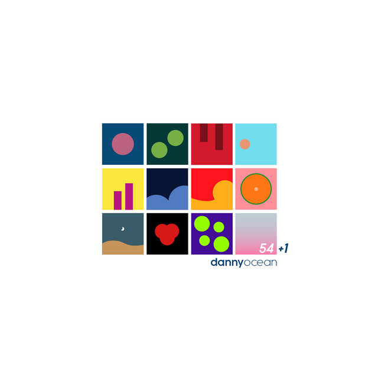

Letra de “Me Rehúso” - Danny Ocean

Ba-ba-babylon girl
Ba-ba-babylon girl
Para todos aquellos amores que
Que fueron obligados a ser separados
Ba-ba-babylon girl
Ba-ba-babylon girl
Esta canción es para ti
Dime ¿Cómo le explico a mi destino que ya no estás ahí?
Dime ¿Cómo haré para desprenderme de este frenesí?
Esta locura que siento por ti
Con esta química que haces en mí
Y ya no puedo, girl
Ya no puedo, girl
Nena, discúlpame y si te ilusioné
Yo no lo quise hacer
Sé que en el amor cuando es real
ese vuelve, vuelve (vuelve, vuelve)
Pero cómo olvidar tu piel
Y cómo olvidarte mujer
Ya no puedo, girl
Ya no puedo, girl
Baby, no (baby, no)
Me rehúso a darte un último beso, así que guárdalo (guárdalo)
Para que la próxima vez te lo dé haciéndolo (haciéndolo)
Haciéndotelo así, así, así
Así como te gusta, baby
Sin mirar atrás, sin buscar a nadie más
Solo quiero estar contigo, woh
Si no te tengo aquí conmigo yo no quiero ser tu amigo
Porque tú eres mi camino, woh
Y yo solo quiero estar junto a ti
Nena, por favor entiéndelo
Solo dame tu mano y confía en mí
Si te pierdes sólo sigue mi voz
Y dale tiempo (tiempo)
Mami, al tiempo (tiempo)
Que tú, que yo
Estamos hechos para estar los dos
Y dale tiempo (tiempo)
Baby, al tiempo (tiempo)
Que tú y yo, que tú y yo
Estamos hechos para estar los dos
Baby, no (baby, no)
Me rehúso a darte un último beso así que guárdalo (guárdalo)
Para que la próxima vez te lo dé haciéndolo (haciéndolo)
Haciéndotelo así, así, así
Así como te gusta, baby (woh, woh)
Baby, no
Me rehúso a darte un último beso, así que guárdalo (guárdalo)
Para que la próxima vez te lo dé haciéndolo
Haciéndotelo así, así, así
Así como te gusta, baby
Así, así, así como te gusta, baby
Baby, no (baby, no)
Me rehúso a darte un último beso, así que guárdalo (guárdalo)
Para que la próxima vez te lo dé haciéndolo
Haciéndotelo así, así, así
Así como te gusta, baby
Y baby, no (baby, no)
Me rehúso a darte un último beso así que guárdalo (guárdalo)
Para que la próxima vez te lo dé haciéndolo
Haciéndotelo así, así
Así como te gusta, baby
Compuesta por: Daniel Alejandro Morales Reyes